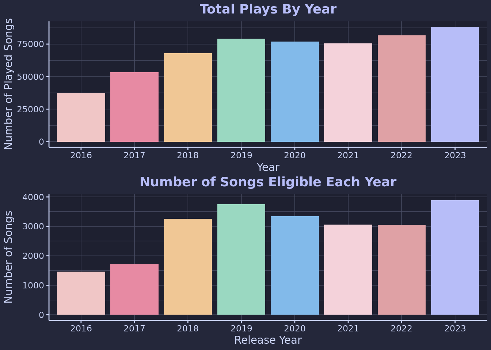
Predicting the 2023 Hottest 100
Like many Australians, I spent my last Saturday in January getting hyped for the Triple J Hottest 100 countdown. And for the past few years, there has been a project run by 100 Warm Tunas that has been remarkably accurate at predicting the results of the countdown.
Warm Tunas makes predictions by scraping social media posts for people’s votes and then collating them as a sample of all votes. While this method is highly effective, I feel that it misses the point a bit when it comes to understanding why a song is popular.
Therefore, this year, I have set out to determine the top songs in the 2023 countdown without relying on anything related to the voting itself.
My Hypotheses
Heading into this, I have a few ideas as to factors that will make a song perform well in the countdown:
Plays on Triple J
I feel this factor is pretty self-explanatory. If a song is being played a lot on Triple J, it’s most likely popular with the listener base and will get more votes in the Hottest 100.
Chart Success
This one is a bit weirder, as I don’t think that just getting to number one in the ARIA charts will make you a top pick for Triple J listeners. Otherwise, the countdown would be topped by the year’s biggest pop hits. If a song is too popular in the mainstream, it seems to fall out of favor with Triple J listeners. However, there are some notable exceptions to this, such as “Bad Guy” by Billie Eilish and “Thrift Shop” by Macklemore, which both took out the top spot in their respective years.
Time of Release and Peak
This idea is commonly thrown around when talking about the Oscars, so I feel that it’s probably going to be applicable to the Hottest 100 as well. Being at peak popularity when people are voting is probably going to be useful. Similarly, a song that hung around for a long time will probably be voted for more than a song that only hung around for a week.
Play Data
I gathered the data for all plays on Triple J for the last 8 years from their API, which left me with a dataset that looks like this:
Number of Plays
To me, the most obvious indicator of a song’s popularity is the number of plays it receives. So, we can start by examining that.
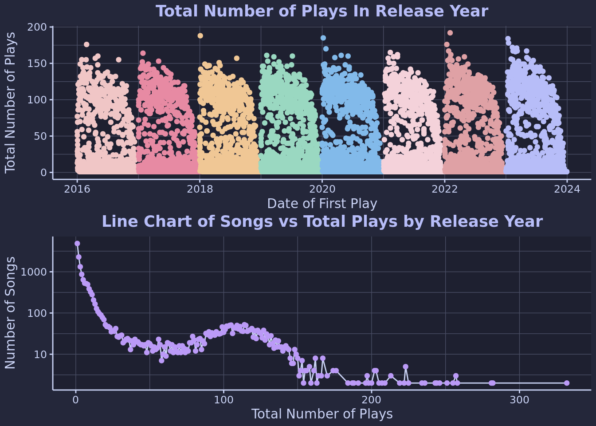
These plots give us a good insight into the trends in how Triple J selects songs. We have a lot of songs with almost no plays, which are mostly songs that are being presented to the audience to gauge their reaction. If they become popular, the songs will be played frequently, indicated by the absence of songs with 40-60 plays. However, very few songs receive excessive playtime, with only a handful surpassing 200 plays.
We can also observe the impact of being released early in the year, as these songs have more opportunities to be played throughout the year, resulting in a downward slope for each year.
How Total Plays Impact Success
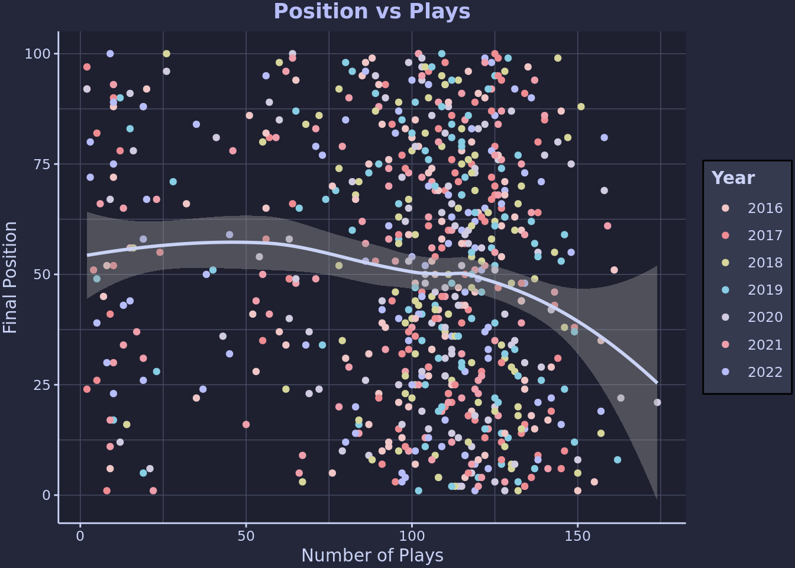
Looking at the rankings, we can see that the total number of plays doesn’t have a massive impact on performance. A song can have five plays or a hundred, and it seems to have a similar outcome in the rankings.
There is a slight downward trend for songs getting over 120 plays, as these are the absolute most played songs for the year. However, this status still doesn’t guarantee a top spot.
Accounting for Time
A thought I had while looking at the absolute play data is that it disproportionately rewards songs that were released earlier in the year.
To address this, I have compiled some statistics that consider the peak of the songs, which should eliminate any advantage for being released at the beginning of the year.
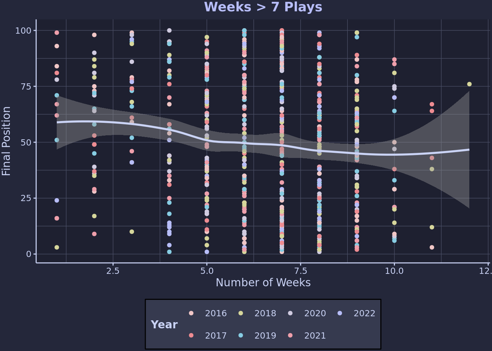
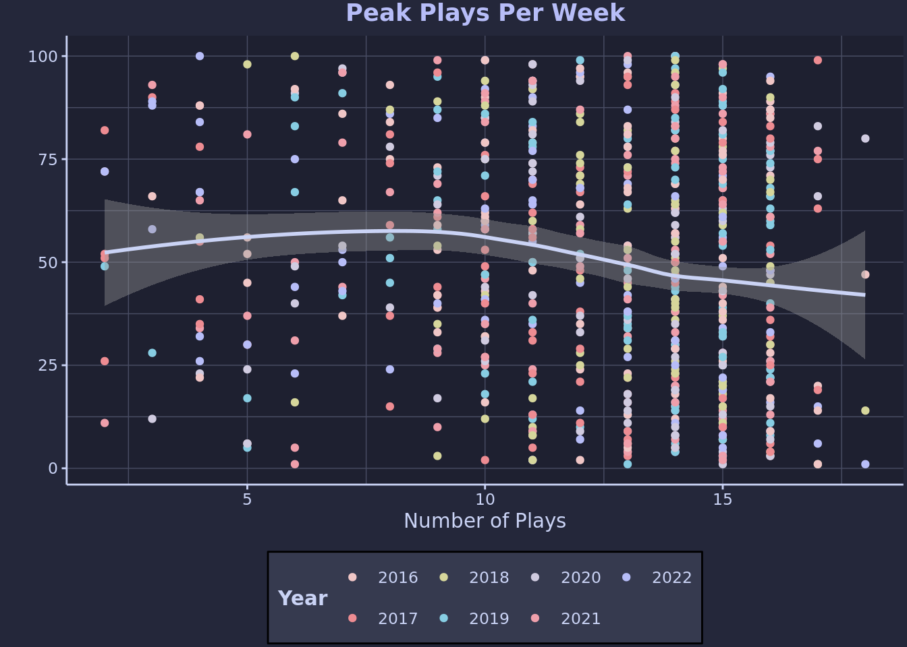
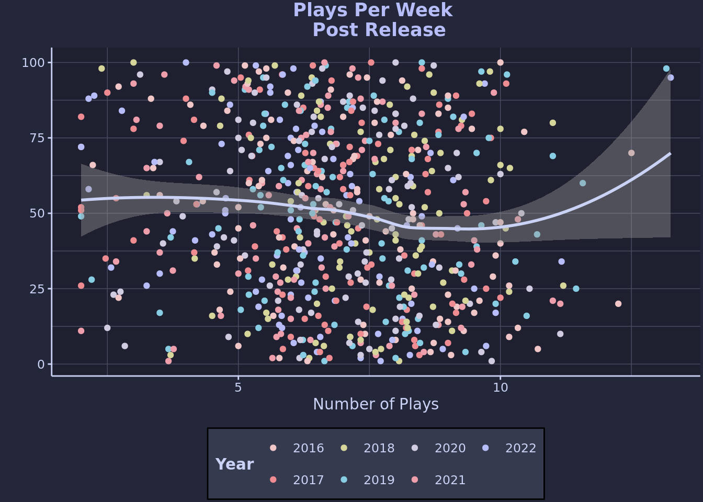
Again, we can see that there is some useful information, with the peak plays per week showing that songs which have a big peak generally perform well in the final rankings. However, as with the absolute count of plays, there doesn’t seem to be a hard and fast rule.
Chart Success
The ARIA charts collate music sales and streaming data within Australia and produce a weekly list of the top 50 most popular songs. A GitHub user has been kind enough to compile all of these lists, so we can simply load them and compare the chart results to a song’s position in the Hottest 100.
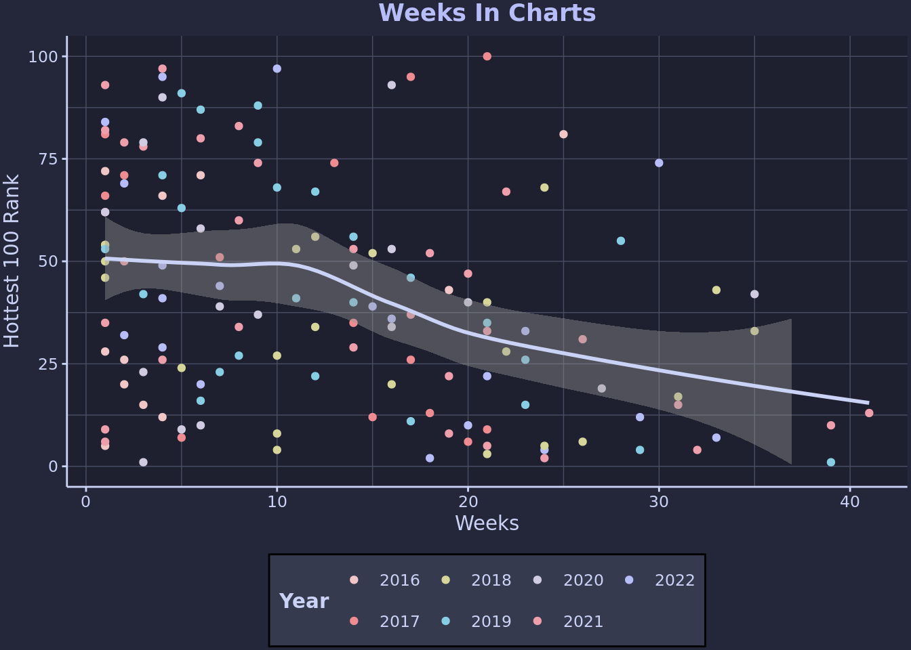
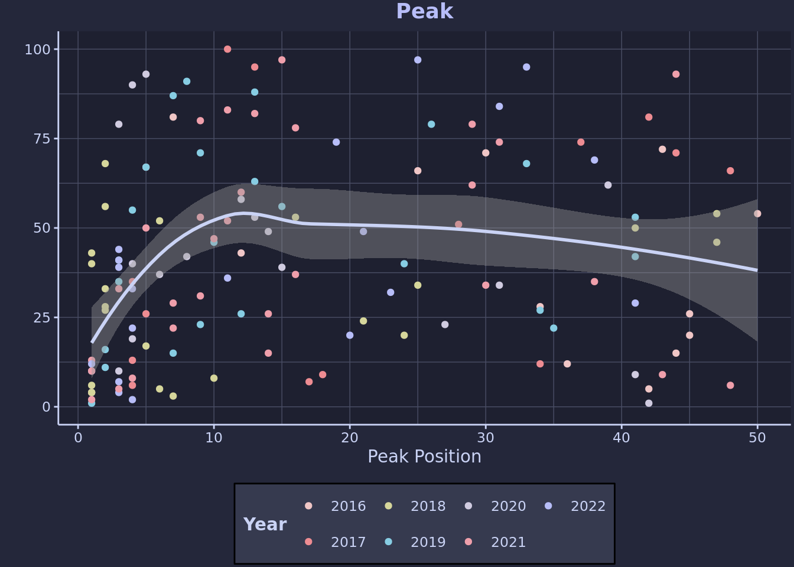
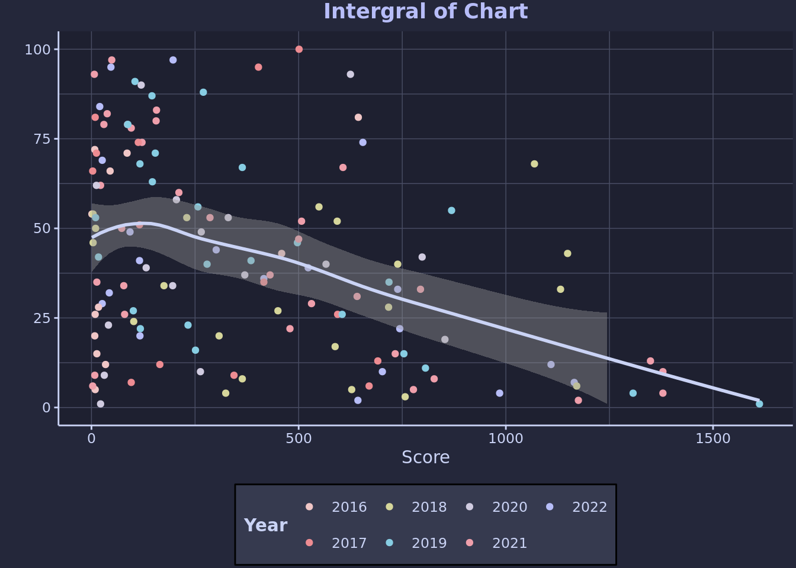
The first thing to note is that these plots are much sparser than the rest. This is because many songs played on Triple J don’t make it into the top 50 at all, even though they make it into the Hottest 100.
For the songs that did make it into the ARIA charts and hung around, they consistently performed well in the countdown. Examples include “Bad Guy” by Billie Eilish and “Dance Monkey” by Tones and I, which claimed the 1st and 4th spots in their respective years.
However, the predictive power of this statistic is again quite limited. Many songs that performed well in the Hottest 100 had poor chart success. For instance, “Redbone” by Childish Gambino took the 5th spot in 2015 despite only spending a single week in the charts at rank 42.
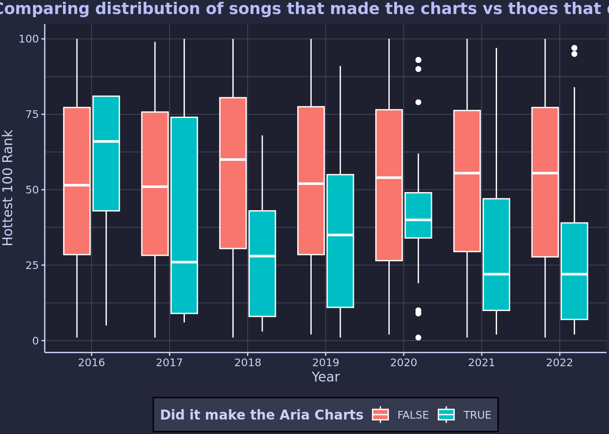
From this chart, we can see that songs that make the charts are outperforming songs that don’t. But more importantly, it shows us that making the charts is not a deal-breaker on whether or not a song will perform well in the Hottest 100.
Timing
Another thing I wanted to look at was when and how the songs peaked in the play data. Maybe being the popular song would help the song perform around the time that voting is open, which may help with its performance in the final rankings.
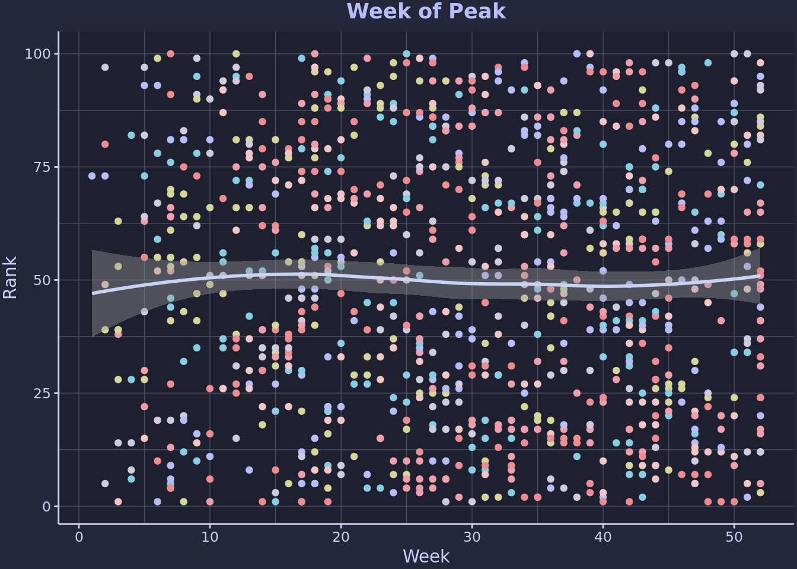
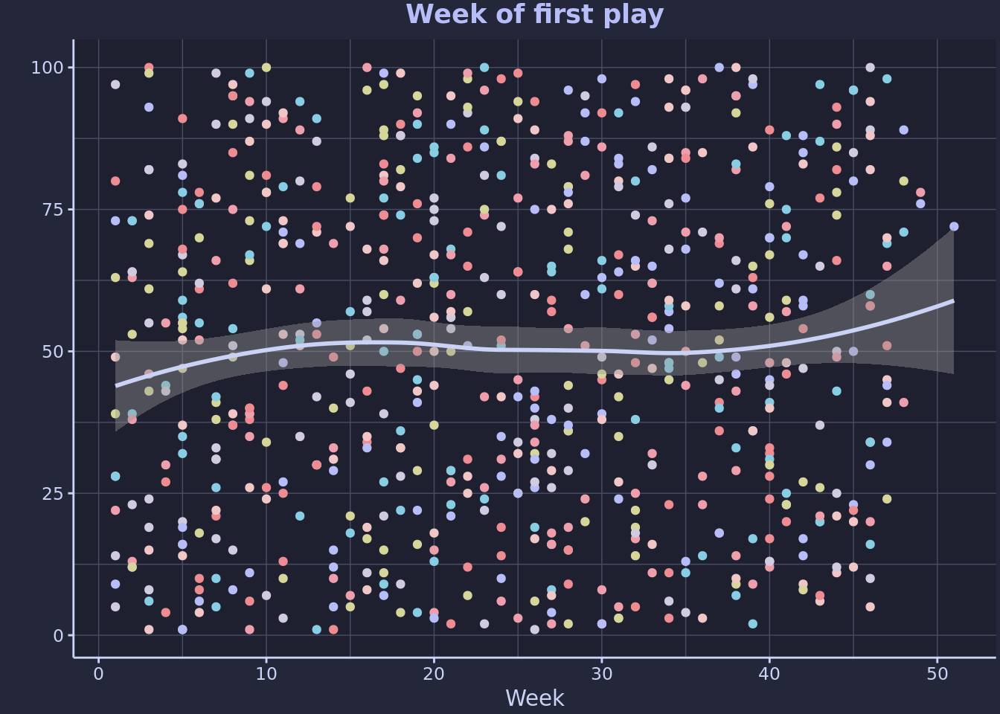
Looking at the above plots, we can see that the week of release or peak really doesn’t matter when looking at the final results.
I went on to see if the shape of the peaks looks different for well-performing songs versus poorly performing songs, and again, nothing seems particularly interesting or different between the two.
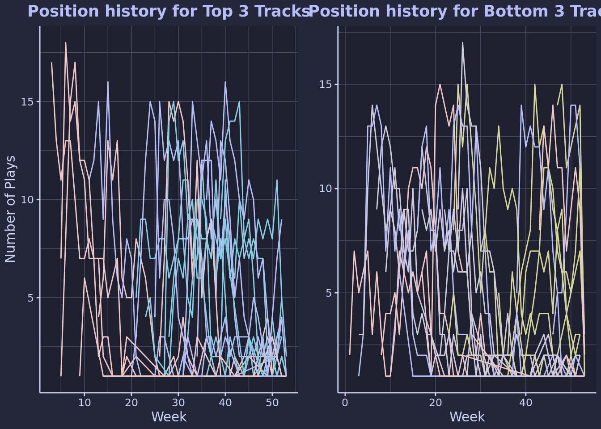
Where we are going wrong
So it seems that all of my hypotheses are incorrect, and I believe the reason for this is that there is too much variation among the top 100. This is because these songs are already considered the best of the year from a pool of nearly 4000.
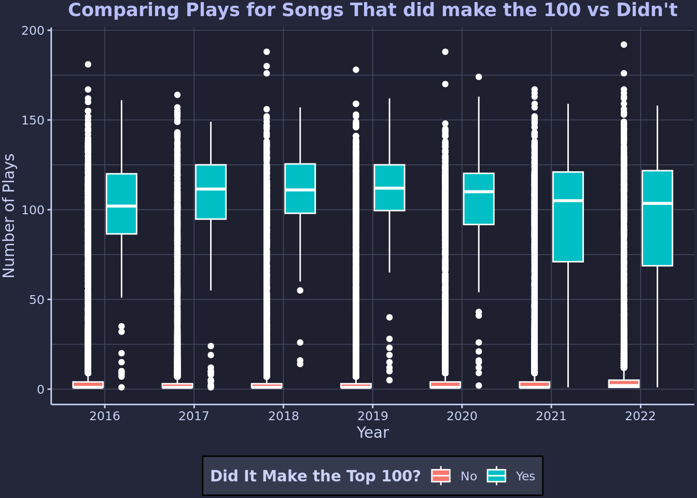
Looking at this plot, we can see right away that a song that made the Hottest 100 got more plays than those that didn’t, but also that plenty of songs that didn’t make the 100 got a comparable number of plays.
Screw it XGBoost
I think the direction to go here is to see if we can use ML to find any trends that aren’t showing up in the plots.
To do this, we are going to use XGBoost to train a model to predict the rank of the song using all the stats I wrote out above. The only thing I changed was taking the first play data and setting it to be the month rather than the day to reduce overfitting. For any song that didn’t make it into the 100, I set the rank to be 101, as it could be the 101st most popular song that year.
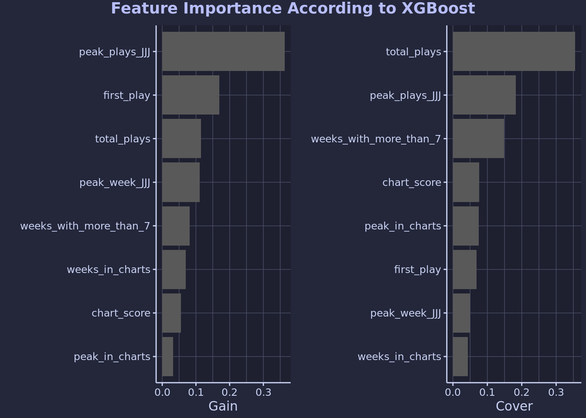
A nice thing about XGBoost is that it can provide insight into the most important factors it uses to predict the results. From the above plots, we can see that the peak of the song on triple J and its total plays contribute significantly to the predictive power.
Interestingly, the chart scores seem to have little effect. However, this can be justified by considering the fact that many songs that make the top 100 never make the charts.
Now that we have the model, we can evaluate its performance in predicting the Hottest 100 by applying it to the play data from 2022.
2022 Predicted Countdown
| Song | Artist | Actual |
|---|---|---|
| b.o.t.a. | eliza rose | 2 |
| say nothing | flume | 1 |
| glimpse of us | joji | 10 |
| bad habit | steve lacy | 4 |
| first class | jack harlow | 12 |
| about damn time | lizzo | 7 |
| sitting up | spacey jane | 6 |
| get inspired | genesis owusu | 17 |
| in the wake of your leave | gang of youths | 9 |
| shirt | sza | 20 |
| hardlight | spacey jane | 3 |
| stars in my eyes | ball park music | 8 |
| stranger days | skegss | 19 |
| god is a freak | peach prc | 16 |
| it’s been a long day | spacey jane | 5 |
| thousand miles | the kid laroi | 33 |
| backseat of my mind | thelma plum | 21 |
| 2 be loved | lizzo | 36 |
| facts of life | lime cordiale | 15 |
| doja | central cee | 39 |
2022 Real Countdown
| Song | Artist | Predicted |
|---|---|---|
| say nothing | flume | 2 |
| b.o.t.a. | eliza rose | 1 |
| hardlight | spacey jane | 11 |
| bad habit | steve lacy | 4 |
| it’s been a long day | spacey jane | 15 |
| sitting up | spacey jane | 7 |
| about damn time | lizzo | 6 |
| stars in my eyes | ball park music | 12 |
| in the wake of your leave | gang of youths | 9 |
| glimpse of us | joji | 3 |
| gay 4 me | g flip | 29 |
| first class | jack harlow | 5 |
| new gold | gorillaz | 24 |
| delilah | fred again | 27 |
| facts of life | lime cordiale | 19 |
| god is a freak | peach prc | 14 |
| get inspired | genesis owusu | 8 |
| stranger days | skegss | 13 |
| shirt | sza | 10 |
| backseat of my mind | thelma plum | 17 |
From this, I reckon the model is doing pretty well, so lets have a look at my final predictions for the hottest 100 of 2023.
My Final Predictions
The list below seems pretty reasonable, with Doja Cat taking the top spot and my pick for number one, Rush, sitting in 10th. There seems to be a big lean towards pop and a lack of your classic Triple J-style indie rockers, but that might just be the turnout for this year.
| Song | Artist |
|---|---|
| paint the town red | doja cat |
| vampire | olivia rodrigo |
| what was i made for? | billie eilish |
| sprinter | dave |
| nanana | peggy gou |
| love type | poolclvb |
| green honda | benee |
| super ego | babe rainbow |
| kill bill | sza |
| rush | troye sivan |
| greedy | tate mcrae |
| strangers | kenya grace |
| sweat you out my system | maya |
| chemical | post malone |
| adored | royel otis |
| bad idea right? | olivia rodrigo |
| lovin on me | jack harlow |
| houdini | dua lipa |
| got me started | troye sivan |
| barbie world | nicki minaj |
| lost without you | san cisco |
| super-vision | dice |
| agora hills | doja cat |
| blak britney | miss kaninna |
| glue song | beabadoobee |
| ruthless | hooligan hefs |
| attention | doja cat |
| james dean | tash sultana |
| never felt so alone | labrinth |
| my love mine all mine | mitski |
| water | tyla |
| still have room | hockey dad |
| do it again | benee |
| trippin up | the jungle giants |
| i wish you roses | kali uchis |
| dash of speed | rum jungle |
| too much | the kid laroi |
| eyes ahead | dice |
| spin me like your records | pacific avenue |
| adore u | fred again |
| dogtooth | tyler |
| pets and drugs | the rubens |
| imposter syndrome | lime cordiale |
| into your room | holly humberstone |
| love again | the kid laroi |
| up | lee |
| pegasus | arlo parks |
| exploding | angie mcmahon |
| stockholm | dice |
| calling | metro boomin |
| must be nice | ruel |
| better love | eliza rose |
| your funeral | maya |
| don’t let me down | gus dapperton |
| the worst person alive | g flip |
| conceited | lola young |
| messed up | holy holy |
| lost in the rush | telenova |
| candle flame | jungle |
| one of your girls | troye sivan |
| minivan | the rions |
| perfect for you | peach prc |
| prescription | remi wolf |
| change | laurel |
| angel | pinkpantheress |
| sinner | the last dinner party |
| midwest | vacations |
| pretty girl | ice spice |
| good enough | g flip |
| take what you want | the rions |
| i wanna dance | royel otis |
| rhyme dust | mk |
| boys light up | chillinit |
| make up your mind | cordae |
| viper room | thornhill |
| weightless | arlo parks |
| letting go | angie mcmahon |
| can’t play myself | skepta |
| black mascara. | raye |
| feel alive | cat |
| tied up! | genesis owusu |
| fine day anthem | skrillex |
| we don’t talk about it | thelma plum |
| mrs. hollywood | gojo |
| am i dreaming | metro boomin |
| comma’s | onefour |
| lola | maya |
| it’s cool to be in love | greta stanley |
| since i have a lover | 6lack |
| prada | cass |
| lil boo thang | paul russell |
| nothing matters | the last dinner party |
| going kokomo | royel otis |
| all my life | lil durk |
| brain freeze | northeast party house |
| healing | molly millington |
| sticky | kito |
| rakata | the jungle giants |
| lost the breakup | maisie peters |
| f u goodbye | peach prc |